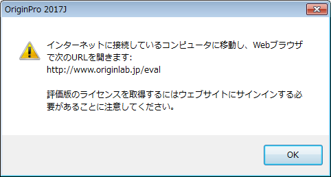

FAQ-2 私の体験版の利用可能時間が無くなってしまいましたが、まだ評価が終わっていません。
Demo-Expired
最終更新日:2016/10/14
- ライセンス不要モードで3日間の評価を行った場合、評価ライセンスダイアログを使って、ライセンスファイルを取得して評価の期間を延長することができます。以下のステップを行ってください。
- 体験版ライセンスを既に取得しており、体験期間が終了した場合には、OriginLabまたは国内代理店－(株)ライトストーンの営業部にお問い合わせください。
体験版のライセンス
体験版のOriginをインストールするとき、「体験用Origin(標準版)のインストール」または「体験用OriginProのインストール」から選択できます。
- オンラインで体験版ライセンスを取得する(インターネット接続がある場合)
- ステップの詳細は こちら をご覧ください。
- オフラインで体験版ライセンスを取得する(インターネット接続がない場合)
- Originを起動します。
- このコンピュータはインターネットに接続できません。 どのようにして体験版ライセンスを取得できるのですか？」を選択します。.
- OKをクリックします。OKをクリックします(以下のメッセージが表示されます)。

- Webブラウザを起動し、OriginLab社のWebサイトwww.originlab.com/evalを開きます。
- ホームページの「続ける」ボタンをクリックします。
- Note 2にある「Origin 体験版ライセンス」リンク（通常版）、「OriginPro 体験版ライセンス」リンク（Pro版）をクリックします。
- 21日間の体験版ライセンスのリクエストページにある 進む をクリックします。
- OriginLabのWebサイトにログインします。
- メールアドレスが正しいか確認します（ライセンスはご登録のメールアドレス宛に送付されます）。
- 「体験版ライセンスファイルの取得」をクリックします。
- 受信したメールからライセンスをコピーします。
- メモ帳に貼り付け、ディスクまたはフラッシュドライブに保存します。
- Originを評価したいPCでテキストファイルを開きます。
- Originで開いているメッセージはOKをクリックして閉じます。
- 「既にライセンスを取得済みです。これを有効にするため入力したいです。」を選択します。
- OKをクリックします。
- Originで表示されているダイアログの1番目のテキストボックスに貼り付けます。
- 2番目のボックスにライセンスを受信したemailアドレスを入力します。
- OKをクリックします。
ライセンスが正常に更新されたことを示すメッセージが表示されます。評価版Originのライセンスは、21日間有効です。
キーワード:評価版, ライセンス